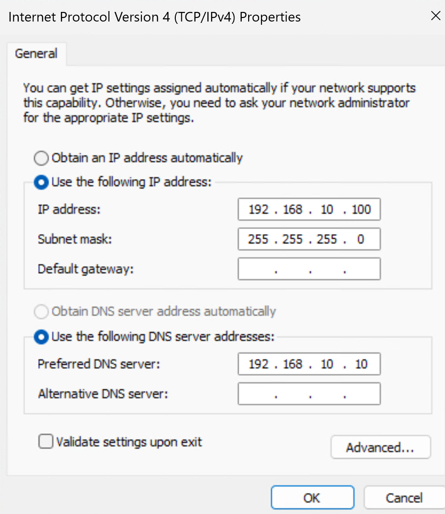
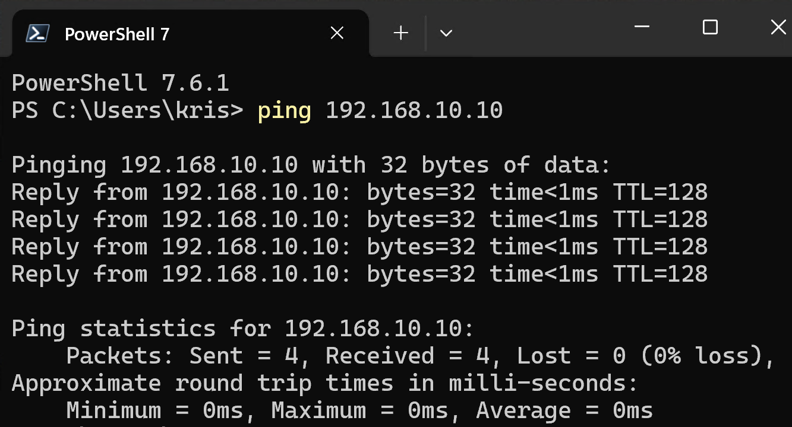
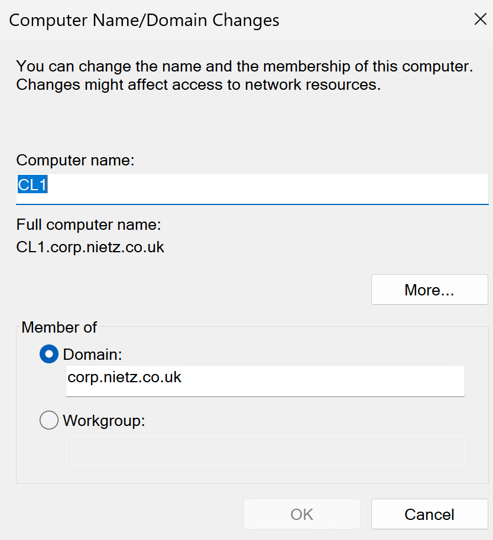
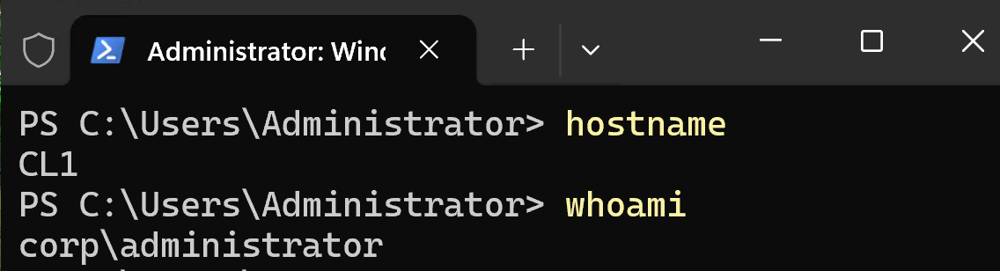
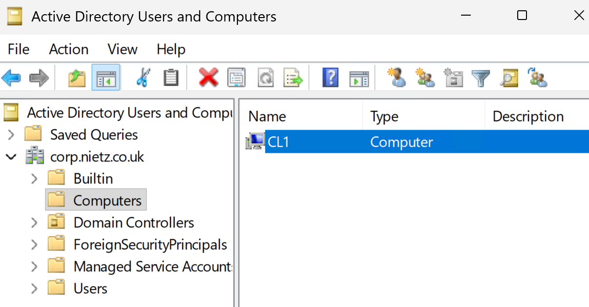
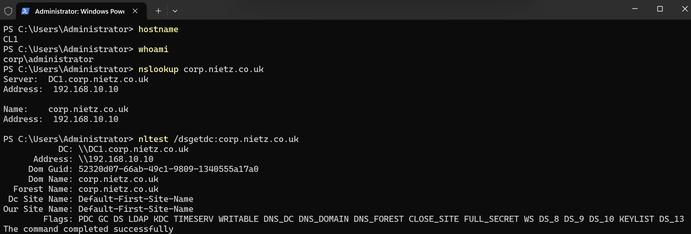
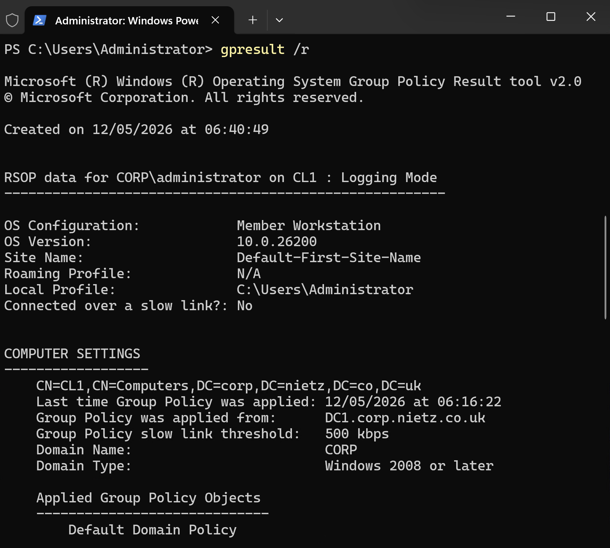

Lab 02: Domain Join and Authentication
Joined CL1 to the corp.nietz.co.uk Active Directory domain and validated DNS, domain-controller discovery, authentication, the computer object and baseline Group Policy processing.
Overview
In this lab, I configured CL1 to use DC1 for internal DNS, joined the workstation to the corp.nietz.co.uk domain, and confirmed that domain authentication and Group Policy processing were working correctly.
This builds directly on Lab 01, where DC1 was configured as the first domain controller for the environment.
Objective
The objective was to convert CL1 from a standalone Windows client into a managed domain workstation that can authenticate against Active Directory and receive domain policy.
Environment
| Component | Value |
|---|---|
| Company | Nietz Ltd |
| Domain Controller | DC1 |
| Domain Controller IP | 192.168.10.10/24 |
| Client | CL1 |
| CL1 Internal IP | 192.168.10.100/24 |
| AD Domain | corp.nietz.co.uk |
| NetBIOS Name | CORP |
| Tenant/Public Domain | nietz.co.uk |
| Domain Join Credential | CORP\Administrator or a delegated domain join account |
Configuration
1. Client DNS Configuration
I configured CL1 to use DC1 as its preferred DNS server so the workstation could resolve Active Directory records from the internal domain.

2. Network Connectivity Validation
I confirmed that CL1 could reach DC1 across the lab network before attempting the domain join.

3. Domain Join
I joined CL1 to the corp.nietz.co.uk domain using domain credentials.

4. Domain Login
I restarted CL1 and confirmed that domain authentication worked by signing in with a domain account.

5. Computer Object Validation
I confirmed in Active Directory Users and Computers that the CL1 computer object was created in the default Computers container.

6. DNS and Domain Controller Discovery
I validated domain DNS resolution and domain controller discovery from CL1.

7. Group Policy Validation
I confirmed that CL1 processed baseline domain Group Policy after the domain join.

Validation
The lab was validated when CL1 successfully joined corp.nietz.co.uk, allowed domain sign-in, appeared in Active Directory Users and Computers, resolved the domain through DC1, discovered DC1 as the domain controller, and processed baseline Group Policy.
Key Technical Outcomes
This lab demonstrated the relationship between workstation DNS configuration, domain controller discovery, secure channel creation, Active Directory computer objects, and Group Policy processing during a Windows domain join.
It also reinforced that domain join failures are often caused by DNS or domain controller discovery problems rather than the domain join wizard itself.
Summary
- I configured CL1 to use DC1 as its preferred DNS server.
- I confirmed network connectivity from CL1 to DC1.
- I joined CL1 to the
corp.nietz.co.ukdomain. - I confirmed the CL1 computer object appeared in Active Directory.
- I validated DNS resolution, domain controller discovery, domain login, and baseline Group Policy processing.